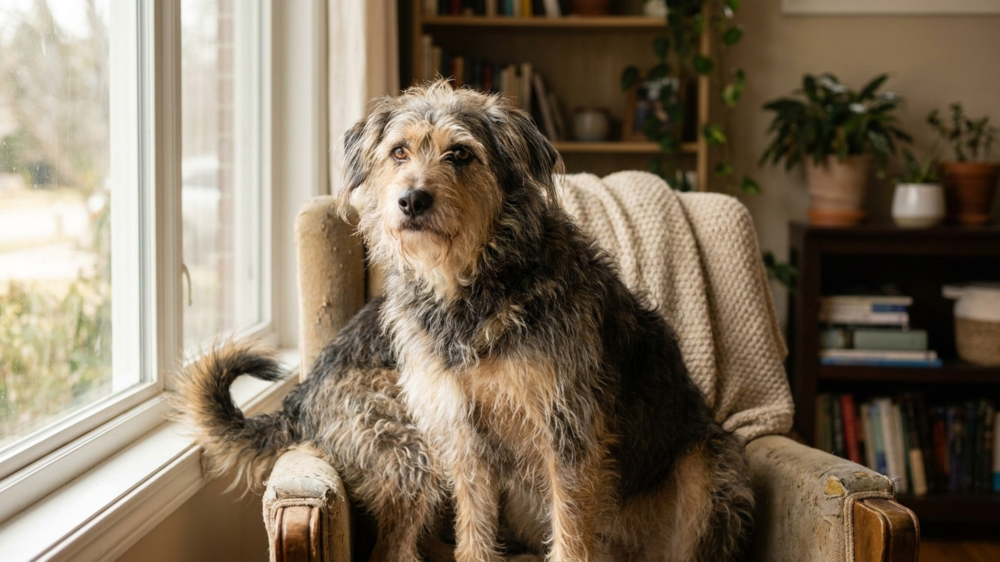

Как определить породу беспородной собаки: внешность, поведение, ДНК-тест

24 мая 2026 · 7 минут чтения · Собаки · Поведение
Взяли собаку из приюта или подобрали на улице — и сразу хочется понять: кто это вообще? Понять состав помеси полезно не только из любопытства. Предки влияют на характер, потенциальные болезни, склонность к определённому поведению и даже на то, как лучше дрессировать. Рассказываем, что говорят внешние признаки и почему ДНК-тест — самый честный ответ.
Почему важно знать породный состав
Это не только «хочу знать, кто у меня». Практические причины:
- Здоровье. Некоторые породы предрасположены к конкретным болезням: лабрадоры — к дисплазии тазобедренного сустава, бульдоги и мопсы — к брахицефальному синдрому, доберманы — к кардиомиопатии. Зная состав, ветеринар назначит правильные профилактические проверки.
- Поведение и дрессировка. Пастушьи породы (бордер-колли, австралийская овчарка) нуждаются в работе и умственной нагрузке — без этого деструктивны. Гончие думают сами и плохо реагируют на жёсткий командный стиль. Зная предков — понимаешь мотивацию собаки.
- Размер взрослой собаки. Для щенка из приюта это критично: вы берёте «среднюю» собаку, а вырастает гигант.
- Реакция на корм. Некоторые породные линии хуже переносят зерновые или чувствительнее к белку.
Что говорят уши
Форма ушей — один из самых информативных внешних признаков, потому что наследуется относительно устойчиво:
- Стоячие острые уши. Немецкая овчарка, хаски, шпиц, чихуахуа, корги. Наличие стоячих ушей у помеси — почти всегда говорит об этих предках.
- Висячие длинные уши. Гончие, бигль, бассет, спаниели. У помесей с гончими уши часто мягкие и длинные.
- Полустоячие (складывающиеся кончиком вперёд). Колли, фокстерьер, некоторые терьеры.
- Плотно прижатые к голове. Мастифы, ротвейлер, лабрадор. Короткие и прилегающие — признак крупных рабочих пород.
- Розовидные (свёрнутые назад). Грейхаунд, уиппет, борзые. Узкая голова + такие уши = высокая вероятность борзой в составе.
Что говорит хвост
- Крючком над спиной. Лайки, акита, шпицы, чау-чау. Хвост-кольцо или крючок — почти всегда северные породы.
- Длинный саблевидный. Немецкая овчарка, лабрадор, ретривер.
- Тонкий длинный, опущен. Борзые, уиппет, грейхаунд.
- Прямой горизонтальный. Пойнтер, легавые — в момент «стойки» уходит горизонтально.
- Купированный. Не информативен — сложно понять форму.
Что говорит размер и строение тела
Размер лап относительно тела: большие «медвежьи» лапы у щенка — признак крупной породы в составе. Щенок будет расти долго.
Пропорции корпуса:
- Длинное тело на коротких лапах — такса, бассет, корги.
- Квадратный корпус с мощной грудью — бульдог, боксёр, питбуль, стаффорд.
- Длинные ноги, лёгкое поджарое тело — борзые и их помеси.
- Широкая голова с выраженными скулами — мастиф, бульмастиф, американский бульдог.
Шерсть:
- Густой подшёрсток с плотным покровом — северные породы (лайки, самоеды, хаски).
- Короткая гладкая без подшёрстка — доберман, далматин, боксёр.
- Длинная волнистая или кудрявая — пудель, спаниель, ирландский сеттер.
- Жёсткая грубая — терьеры.
Что говорит поведение — надёжнее, чем внешность
Породные инстинкты наследуются устойчиво — иногда даже сильнее, чем внешность. Если в составе есть 25% пастушьей породы, собака, скорее всего, будет «пасти» детей, велосипедистов или других животных — независимо от того, как она выглядит.
- Гоняет/пасёт движущиеся объекты, людей, детей. Пастушьи породы (колли, бордер-колли, австралийская овчарка, келпи).
- Роет ямы с маниакальным упорством. Терьеры.
- Подбирает всё съедобное с земли, тащит вещи в зубах. Ретриверы, лабрадоры.
- Постоянно ищет нос в земле, теряет контакт с хозяином на прогулке. Гончие, бигль, такса.
- Подозрительна к чужим, охраняет территорию. Охранные и пастушьи породы (немецкая овчарка, ротвейлер, кавказская овчарка).
- Фиксируется на одной добыче, замирает. Легавые, пойнтер.
- Легко учится, выполняет команды с удовольствием. Золотистый и лабрадор-ретривер, немецкая овчарка, бордер-колли.
ДНК-тест: как это работает и что показывает
Ветеринарный ДНК-тест для собак — это анализ образца слюны или крови, сравниваемый с базой данных породных генотипов. Результат: процентный состав пород-предков.
Как сдать в России в 2026 году:
- Через ветеринарную клинику — забор крови или мазок, отправка в лабораторию.
- Через онлайн-заказ комплекта для домашнего забора мазка — Wisdom Panel, Embark (доставка из-за рубежа) или российские аналоги (ДНК-тест «Хвост и лапы», «Петровет»).
- Стоимость: 5 000 — 15 000 ₽ в зависимости от сервиса и глубины анализа.
Что показывает: состав породных групп (например, 45% немецкая овчарка, 30% лабрадор-ретривер, 25% «местная» помесь), риски генетических заболеваний (дисплазия, кардиомиопатия, эпилепсия), некоторые тесты — прогноз взрослого веса и роста.
Ограничения: базы данных разных компаний различаются. Если в составе собаки преимущественно дворовые/уличные предки без чёткого породного профиля, тест покажет размытый результат — «смесь нескольких пород без доминанты».
🐾 Первая помощь — всегда под рукой
AnimaLife подскажет, что делать в тревожной ситуации с питомцем ещё до визита к врачу. Откройте в один тап.
Открыть AnimaLife → Открыть в MAX →
🐾 Понравился разбор?
Подпишитесь на канал — каждый день разбираем по одному тревожному симптому у кошек и собак: что в пределах нормы, а когда пора к врачу. Подпишитесь, чтобы не пропустить разбор, который может спасти здоровье вашего питомца.
Самые распространённые «московские» помеси и как их узнать
На улицах и в приютах российских городов чаще всего встречаются определённые метисы:
- Овчарко-дворняга. Средний размер, стоячие или полустоячие уши, рыжий или чёрно-подпалый окрас, умная, контактная. Немецкая овчарка или восточно-европейская овчарка + местная.
- Лабра-дворняга. Средний размер, короткая шерсть, добродушная, тянет поводок, подбирает всё. Лабрадор + местная.
- Хаски-дворняга. Стоячие уши, голубые или разноцветные глаза, воет вместо лая, упряма. Хаски или лайка + местная.
- Терьер-дворняга. Компактная, жёсткая шерсть, упёртая, роет. Терьер (стаффорд, фокстерьер) + местная.
Могу ли я угадать породу по фото через AI
Современные AI-сервисы неплохо определяют породу по фотографии — в первую очередь если собака «чистопородная на вид». Для метисов точность падает, потому что AI обучен на породных эталонах и будет называть ту породу, которой собака визуально похожа больше всего.
Результат AI-определения по фото — хорошая отправная точка, но не заменяет ДНК-тест для медицинских решений. AnimaLife позволяет загрузить фото питомца и получить первичный vet-AI анализ поведения и внешности — в комплексе это полезнее, чем просто «угадайка».
← Все статьи · Открыть AnimaLife в Telegram · RSS